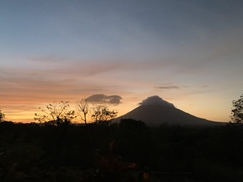
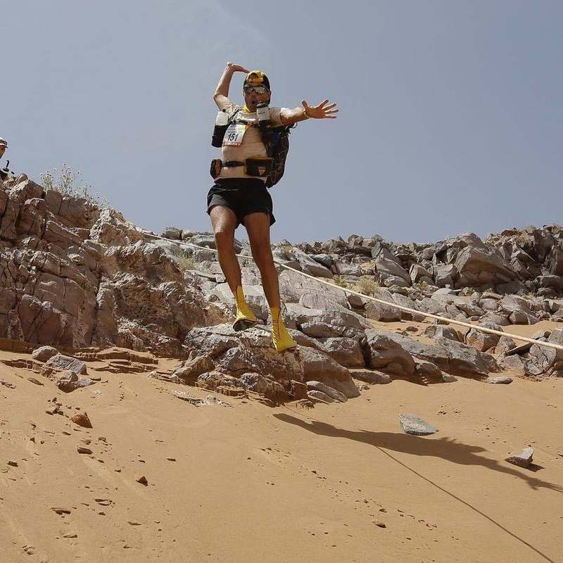

The storyLa historia
Far Horizon is a small 1:1 practice for runners whose next race is also a chapter — a first hundred, a return, a stage race across desert or mountain. The work is personal because the circle is kept that way.Far Horizon es una práctica 1:1 reducida para corredores cuya próxima carrera es también un capítulo — un primer hundred, un regreso, una etapa en desierto o montaña. El trabajo es personal porque el círculo se mantiene así.
Request an introductionPedir una presentación How the week is heldCómo se sostiene la semanaEvery athlete here is trained as a whole season. What you will feel is closeness. What you will not find is a method posted on a page.Cada atleta se entrena como una temporada completa. Lo que se siente es cercanía. Lo que no encontrarás es un método colgado en una página.


Same form as dusk lead. Use dusk page to write.